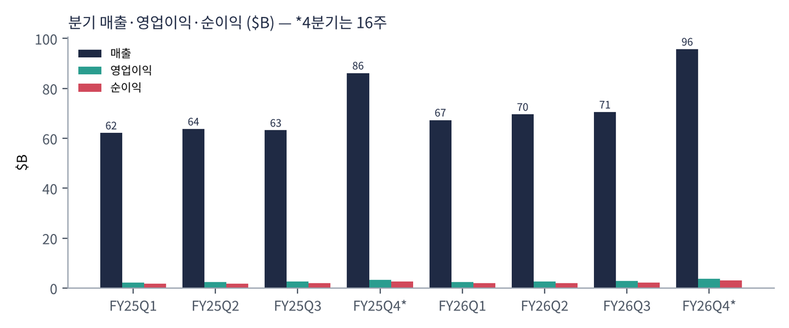
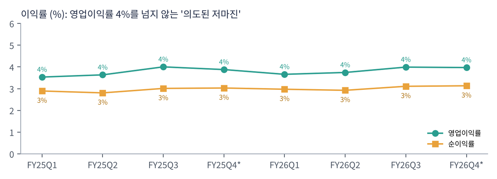
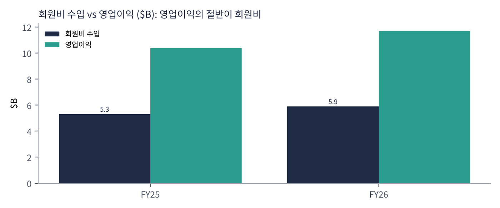
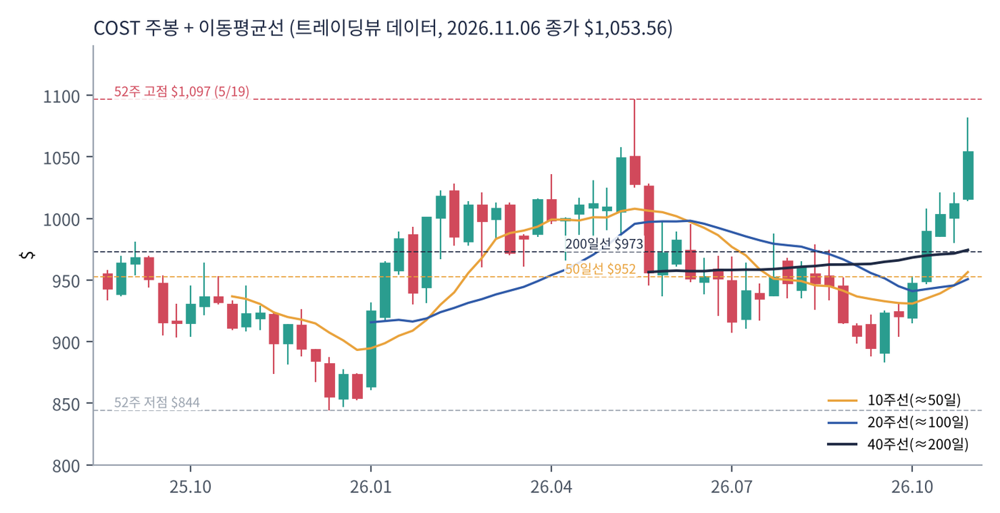
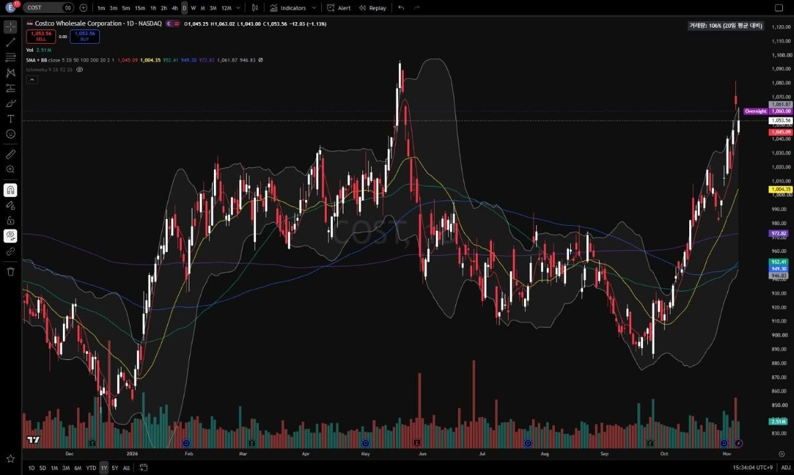
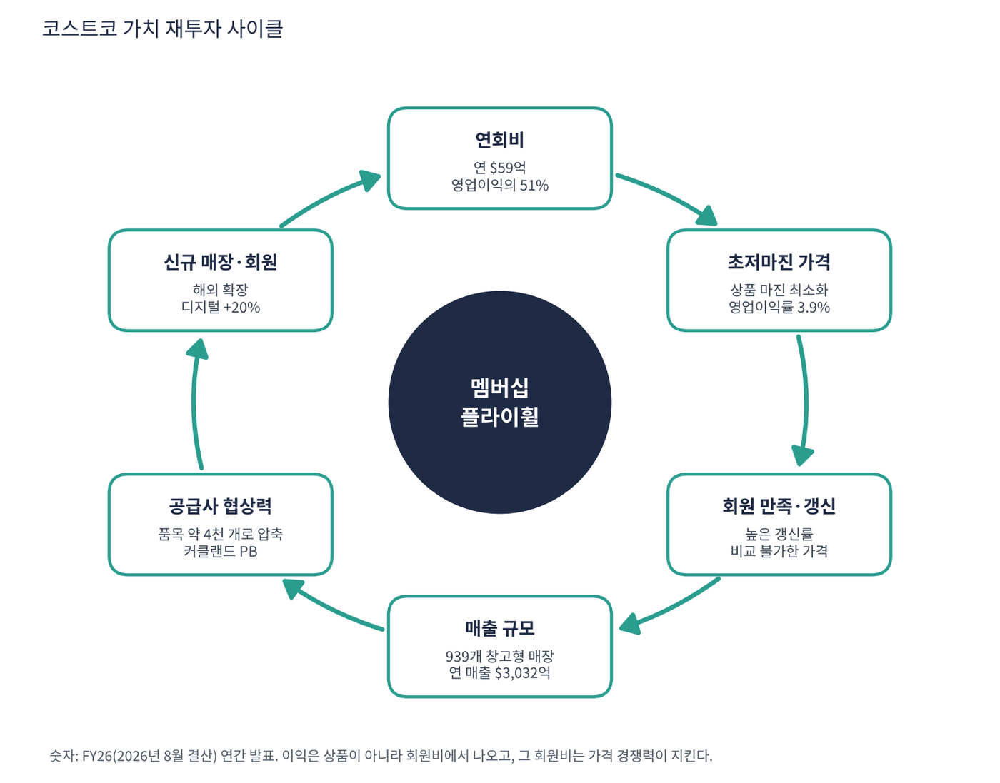

코스트코는 연회비를 낸 회원만 들어갈 수 있는 창고형 할인점이다. 매장 하나에 약 4,000개 품목만 대용량으로 쌓아두고, 상품에서는 거의 남기지 않고 연회비로 이익을 내는 독특한 구조다. 전 세계 939개 매장(미국·푸에르토리코 647, 캐나다 115, 멕시코 43, 일본 37, 영국 29, 한국 20, 호주 15, 대만 14, 중국 7 등)을 운영한다.
| 항목 | 내용 |
|---|---|
| 종목 | Costco Wholesale (COST) · NASDAQ · 1983년 · 본사 워싱턴주 이사콰 |
| 시가총액 | 약 $4,669억 · PER 50.8배 · 배당수익률 0.56% (트레이딩뷰, 11/6 종가 $1,053.56) |
| FY26(2026년 8월 결산) | 매출 $3,032억, 순매출 $2,972억(+10.1%), 순이익 $92.3억, EPS $20.76(+14%) |
| 회원비 수입 | $59.1억(+11%) — 영업이익 $116.9억의 51% |
| 최근 월간 매출 | 10월 순매출 +12.6% (트레이딩뷰 뉴스) |
| 직책 | 인물 | 역할·특징 |
|---|---|---|
| CEO | 론 바크리스 | 2024년 1월 CEO 취임. 1982년 창고 지게차 운전으로 시작한 40년 내부 출신 |
| CFO | 개리 밀러칩 | 2024년 합류. 영국 슈퍼마켓 출신, 디지털·리테일 미디어 확대 |
| 창업 정신 | 짐 시네갈(공동창업자) | '마크업 상한'·'핫도그 $1.50' 같은 원칙을 남긴 인물 |
경영 스타일: '고객에게 남기지 않는다'. 코스트코는 상품 마진에 사실상 상한을 두고, 원가가 내리면 즉시 가격을 내린다. 직원 임금은 업계 최고 수준이라 이직률이 낮고, 광고는 거의 하지 않는다. 그 대신 회원 갱신률을 최우선 지표로 본다. 바크리스 체제에서 달라진 점은 디지털(앱·온라인 +20%)과 리테일 미디어(광고)를 키우고, 2024년 9월 연회비를 7년 만에 인상(골드스타 $60 → $65)했다는 것이다.
품목 수를 일반 마트의 10분의 1로 줄여 품목당 구매량을 극대화하고, 팔레트째 진열해 인건비를 줄인다. PB 브랜드 '커클랜드 시그니처'는 품질은 유명 브랜드급, 가격은 더 싸다.
점포를 매년 25~30개씩 늘리며(특히 해외) 회원 수를 키우고, 회원 1명당 연회비와 구매액을 높이는 것. 이익은 그 결과로 따라온다는 철학.
| 분기 | 매출 | YoY | 영업이익 | 이익률 | 순이익 | EPS | EPS YoY | 비고 |
|---|---|---|---|---|---|---|---|---|
| FY25 1Q | $622억 | – | $22.0억 | 3.5% | $18.0억 | $4.04 | – | |
| FY25 2Q | $637억 | – | $23.2억 | 3.6% | $17.9억 | $4.02 | – | |
| FY25 3Q | $632억 | – | $25.3억 | 4.0% | $19.0억 | $4.28 | – | |
| FY25 4Q* | $862억 | – | $33.4억 | 3.9% | $26.1억 | $5.87 | – | 16주 |
| FY26 1Q | $673억 | +8.3% | $24.6억 | 3.7% | $20.0억 | $4.50 | +11% | |
| FY26 2Q | $696억 | +9.2% | $26.1억 | 3.7% | $20.4억 | $4.58 | +14% | |
| FY26 3Q | $705억 | +11.6% | $28.1억 | 4.0% | $21.9억 | $4.93 | +15% | |
| FY26 4Q* | $957억 | +11.1% | $38.0억 | 4.0% | $30.0억 | $6.75 | +15% | 16주, 관세 환급 $0.15 |


흐름 요약: 회계 4분기는 16주(나머지는 12주)라 매출이 커 보인다. 같은 분기끼리 비교하면 매출 +8~11%, EPS +10~15%가 2년 내내 이어졌다. 영업이익률은 3.5~4.0% 사이에서 거의 움직이지 않는다. 회사가 이익률을 일부러 낮게 유지하기 때문이다. FY26 4분기 비교 가능 매출은 +9.4%(유가·환율 조정 +6.7%), 디지털 +19.5%다.
| 수익원 | 돈을 버는 방식 | FY26 | 특징 |
|---|---|---|---|
| 상품 매출 | 식료품·신선식품·가전·의류·약국 등. 마진 최소화 | $2,972억 (+10.1%) | 매출의 98%지만 이익의 절반 이하 |
| 회원비 | 골드스타 $65, 이그제큐티브 $130(2% 리워드) | $59.1억 (+11%) | 영업이익의 51% |
| 부가 사업 | 주유소, 약국, 안경, 여행, 푸드코트 | – | 방문 빈도를 높이는 미끼 |
| 디지털 | 앱·온라인 주문·배송 | +20.9% (연간) | 고성장 |

코스트코는 사실상 '구독 사업'이다. 회원비 $59억은 영업이익 $117억의 절반이고, 거의 100% 이익이다. 4분기 회원비는 $18.5억(전년 $17.2억). 연회비 인상 효과가 FY26에 대부분 반영돼, FY27 회원비 성장률은 신규 회원 증가에 더 의존하게 된다.
코스트코의 목적은 단순하다. "품질 좋은 상품을 가능한 한 가장 낮은 가격에 회원에게 제공한다." 이익을 극대화하지 않는 것 자체가 전략이다.
| 축 | 내용 |
|---|---|
| 가격 신뢰 | 마크업 상한 → 회원이 가격 비교를 하지 않아도 되는 신뢰 |
| 회원 기반 | 갱신률이 매우 높아 연회비가 예측 가능한 반복 수익 |
| 해외 확장 | 일본·한국·호주·유럽·중국 등 신규 매장 매년 추가 |
| 직원 우대 | 업계 최고 임금 → 낮은 이직률 → 운영 효율 |


위: 트레이딩뷰 주봉 데이터로 재구성. 아래: 트레이딩뷰 공개 차트 일봉 캡처(작도 숨김).
| 이동평균 | 값 | 종가 대비 | 해석 |
|---|---|---|---|
| 5일선 | $1,045.09 | +0.8% | |
| 20일선 | $1,004.35 | +4.9% | 10월 중순 이후 반등 추세 |
| 50일선 | $952.41 | +10.6% | 아직 200일선 아래 |
| 100일선 | $949.30 | +11.0% | |
| 200일선 | $972.82 | +8.3% | 11월 초 재돌파 |
5월 $1,097 고점 → 9월 $883까지 19% 조정 후 10월 중순부터 반등해 $1,054다. 월마트와 거의 같은 모양으로, 200일선은 회복했지만 50일선이 아직 200일선 아래다.
| 규칙 | 기준 | 현재 값 | 신호 |
|---|---|---|---|
| 장기 추세 필터 | 종가 vs 200일선 | $1,053.56 > $972.82 | 매수 |
| 중장기 교차 | 50일선 vs 200일선 | $952.41 < $972.82 | 매도 |
| 단기 교차 | 20일선 vs 50일선 | $1,004.35 > $952.41 | 매수 |
| 돈키언 채널 | 55일 고가 $1,081.55 / 저가 $883.10 | 중간값 $982.33 위 | 매수 |
| 1개월 모멘텀 | 21거래일 수익률 | +11.1% (기준 $947.92) | 매수 |
| 3개월 모멘텀 | 63거래일 수익률 | +10.6% (기준 $952.75) | 매수 |
| 6개월 모멘텀 | 126거래일 수익률 | +4.4% (기준 $1,008.79) | 매수 |
| 12개월 모멘텀 | 252거래일 수익률 | +12.7% (기준 $935.03) | 매수 |
| 종합 (8개 평균) | +0.75 | 강한 매수 |
해석: +0.75(매수 우위). 유일한 매도 신호는 50/200 교차다. 50일선($952)과 200일선($973) 차이가 2%라 몇 주 안에 골든크로스로 +1.00이 될 가능성이 높다. 14일 ATR $20.70 (2.0%).
| 가격 | 무엇이 바뀌나 | 의미 |
|---|---|---|
| 50일선 > 200일선 | 골든크로스 | 점수 +1.00 |
| $1,004 | 20일선 이탈 | 단기 약화 |
| $982 | 돈키언 중간값 | 점수 +0.50 |
| $973 | 200일선 이탈 | 점수 +0.25 이하 |
약 32일 뒤(12월 중순) 1분기 실적이 있다. 월간 매출(12월 초 11월분) 발표도 주가에 영향을 준다. 매수는 200일선~20일선($975~1,005) 눌림, 손절은 50일선($952) 아래 $950.
| 악재 요인 | 내용 | 강도 |
|---|---|---|
| 밸류에이션 | PER 51배, PEG 3.6 — 7개 회사 중 PER 최고. 성장 둔화 시 PER 축소 위험 | 높음 |
| 회원비 성장 둔화 | 2024년 인상 효과가 FY26에 대부분 반영 → FY27 회원비 성장률 하락 가능 | 중간 |
| 관세·원가 | 수입 상품 원가 상승(FY26 4분기에는 관세 환급 일회성 이익 $0.15/주) | 중간 |
| 유가·환율 | 주유 매출·해외 매출 환산 변동 | 참고 |
| 인건비 | 임금 인상 → 저마진 구조에서 이익 압박 | 참고 |
| 티커 | 회사 | 시가총액 | PER(TTM) | PEG | P/S | EPS 성장(YoY) |
|---|---|---|---|---|---|---|
| COST | 코스트코 | $467B | 50.8배 | 3.58 | 1.53배 | +14% |
| WMT | 월마트 | $996B | 45.5배 | 11.20 | 1.38배 | +4% |
| BJ | BJ's 홀세일 | $14B | 23.9배 | 4.74 | 0.62배 | +5% |
| TGT | 타깃 | $72B | 16.4배 | 1.33 | 0.67배 | +12% |
| DG | 달러제너럴 | $30B | 17.4배 | 0.42 | 0.69배 | +42% |
| KR | 크로거 | $40B | 36.6배 | – | 0.28배 | -53% |
비교 결론: 코스트코 PER 50.8배는 같은 사업 모델의 BJ's(23.9배)의 2배가 넘는다. 피어 중 PEG 기준을 통과하는 곳은 달러제너럴(0.42, 전년 부진 기저효과)뿐이다. 코스트코는 '최고의 사업, 최고의 가격'이다. EPS 성장률(+14%)은 월마트(+4%)보다 높아 PEG는 월마트보다 낫지만 여전히 기준의 3.6배다.
코스트코는 적자 기업이 아니다. FY26 순이익 $92억, FCF 약 $94억, 순현금(현금 > 부채) 상태다. 현금 런웨이 개념 대신 순현금과 현금 쓰임을 본다.
| 지표 | 값 | 의미 |
|---|---|---|
| 잉여현금흐름(FCF) | +$94억 | 트레이딩뷰 TTM |
| 현금성 자산 / 총부채 | $213억 / $102억 | 순현금 약 $111억 |
| 현금 쓰임 | 신규 매장, 배당, 수년에 한 번 특별배당 | 특별배당은 순현금이 쌓일 때 지급하는 전통 |
| 회사 | P/S | 영업이익률 | 해석 |
|---|---|---|---|
| COST | 1.54배 | 3.9% | 시총 $4,669억 ÷ 매출 $3,032억 |
| 월마트(WMT) | 1.35배 | 4.4% | 광고·멤버십 플랫폼 기대 |
| BJ's 홀세일(BJ) | 0.62배 | – | 같은 회원제 창고형 |
| 타깃(TGT) | 0.67배 | – | 일반 유통 |
해석: 같은 회원제 창고형 할인점 BJ's의 P/S는 0.62배인데 코스트코는 1.54배로 2.5배다. 영업이익률은 4%가 안 되므로, P/S 1.5배는 '매출 $1당 이익 $0.04'에 대해 $1.54를 내는 셈이다. 이 프리미엄은 회원비(반복 매출)의 안정성과 해외 점포 성장의 장기 가시성에 대한 대가다. 이익률이 구조적으로 오르지 않는 회사라 P/S가 이익 성장 이상으로 오르면 주가는 비싸진다.
| 지표 | 값 | 판정 |
|---|---|---|
| EBITDA (트레이딩뷰, TTM) | $144억 | 흑자 |
| 영업이익 (FY26) | $116.9억 | SEC XBRL |
| EBITDA 마진 | 약 4.7% | 의도적 저마진 |
| 회원비 / EBITDA | 41% | EBITDA의 4할이 연회비 |
| 방식 | PER | EPS 성장률 | PEG | 판정 |
|---|---|---|---|---|
| 트레이딩뷰 (TTM) | 50.8배 | +14.0% | 3.58 | 기준 초과 |
| 직접 계산 (FY26 EPS) | 50.7배 ($1,053.56 ÷ $20.76) | +14.0% ($18.21 → $20.76) | 3.6 | 기준 초과 |
| 관세 환급 효과 제외 | 51.1배 (EPS 약 $20.61) | +13.2% | 3.9 | 기준 초과 |
판정: PEG 3.58 → 기준(1.0)의 3.6배, '투자 적격' 아님. 코스트코는 10년 넘게 PEG 2~4를 유지해 온 '영원한 프리미엄 종목'이라, 이 기준으로는 거의 매수 신호가 나오지 않는다. PEG 1.0이 되려면 주가가 약 $290(PER 14배)이거나, EPS 성장이 연 50%가 돼야 한다. 둘 다 현실성이 낮다. PEG 기준을 고수한다면 코스트코는 '관찰 대상'이다.

코스트코 사이클의 핵심은 연회비로 고객을 묶는 구조다.
| 고리 | 현재 숫자 | 고리 강도 | 약해지는 신호 |
|---|---|---|---|
| ① 연회비 | $59.1억(+11%), 2024년 인상 효과 | 강함 | 갱신률 하락 |
| ② 초저마진 가격 | 영업이익률 3.9% | 강함 | 이익률을 올리려는 시도(전략 변화) |
| ③ 회원 만족·갱신 | 높은 갱신률 유지 | 강함 | 디지털 세대 이탈 |
| ④ 매출 규모 | 939개 매장, 순매출 $2,972억(+10%) | 강함 | 비교 가능 매출 5% 미만 |
| ⑤ 공급사 협상력 | 품목 약 4천 개, 커클랜드 PB | 강함 | 관세로 원가 상승 |
| ⑥ 신규 매장·회원 | 해외 확장, 디지털 +20% | 강함 | 출점 속도 둔화 |
판단: 모든 고리가 초록색이다. 코스트코의 사이클은 막힌 고리 없이 '깨끗하게' 돈다. 문제는 월마트와 마찬가지로 사이클이 아니라 PER 51배라는 가격이다.